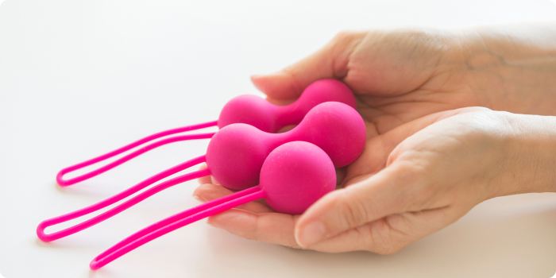

Discussing pelvic exercises and Kegel weights can be embarrassing. However, it shouldn’t be. If you don’t flinch when chatting about biceps with your friends, you shouldn’t hesitate to flex your pelvic floor muscles. We have you covered in this tell-all about how to use Kegel weights to strengthen your vaginal muscles and improve your bladder control.

What are Kegel weights?
Kegel weights are placed inside your vagina. You perform weightlifting exercises to increase your vaginal strength. These pelvic floor weights come in different sizes and shapes like oblong, teardrop, or spheres.
How do they work?
Kegel weights work because it is the equivalent of your pelvic floor muscles hitting the gym. When talking about your pelvic floor muscles, many women make the mistake of assuming that means your vaginal muscles. However, your pelvic floor is the hammock that supports your pelvic organs.
Think about your bladder, rectum, and uterus. The pubococcygeus (PC) muscles support those organs. The PC muscles stretch from your pubic bone (the hard bone above your vulva) to your tailbone, forming the pelvic floor.
Strengthening these muscles promotes your overall sexual pleasure and health. Performing pelvic floor exercises sounds harder than it is. Pelvic floor exercises, known as Kegels, are named after the gynecologist who discovered them, Dr. Arnold Kegel.1
In 1948, Dr. Kegel created a device to measure the strength of voluntary vaginal muscle contractions and the exercise techniques we know today as Kegel exercises.
How do Kegel exercises help?
Kegel exercises are the techniques used to strengthen your pelvic floor. One of the problematic parts is identifying the pelvic floor muscles. Try one of the following techniques:
- Tighten like you are attempting to avoid passing gas.
- Pretend to squeeze your vagina around a tampon
As a last resort, you can stop your urine stream while using the restroom. However, this is risky as it may cause a bladder or urinary infection. Incomplete emptying of your bladder is more dangerous than the other recommendations.
- Once you’ve learned where your PC muscles are, you can stick fingers in the vagina and squeeze. You should feel the muscle tensing.
- Contract the muscles for five seconds and then relax for five.
- Repeat ten times.
- Try to do three to four sets throughout the day. Spreading them out may provide better results.
Don’t hold your breath while performing Kegel exercises. Focus on breathing out and only squeezing your PC muscles. Squeezing your thighs, stomach, or buttocks means you are not performing the exercise properly.
How long until my vagina feels stronger?
Just like any exercise program, Kegel exercises require a commitment. You should notice an improvement within six weeks to three months. Some women receive adequate relief from performing the strengthening exercises alone, while others look to accessories.
There are Kegel exerciser devices like weights and Kegel balls that provide additional benefits. Every vagina is different, and so is its response to these additional tools. Some women benefit from vaginal weights, and others do best with standalone Kegels.
Why should I use vaginal weights?
There are a bunch of ways that Kegel vaginal weights improve your life and health. Examples include:
- Decrease urinary incontinence
- Decrease overactive bladder
- Prevent uterine or bladder prolapse
- Prevent incontinence of stool
Beyond physical concerns, many women tout sexual benefits, such as:
- Boost sexual arousal
- Take charge during penetration
- Squeeze vaginal walls on penis during intercourse
- Enhances orgasm
How can Kegel weights help urinary symptoms?
When the pelvic muscles are weak, it can cause overactive bladder (OAB) or urinary incontinence. But what’s incontinence, you ask? When coughing, sneezing, or laughing causes you to lose urine, you are experiencing a condition called stress incontinence.
OAB is the frequent and sudden sensation of having to use the restroom immediately. These frequent urges to void may be difficult to control. But women who do Kegel exercises lessen these embarrassing symptoms.
Kegel weights also strengthen the pelvis to keep the bladder and uterus where they belong. Prolapse is when they fall through the walls into the vagina.
How do I get started?
Kegel exercise weights are used to improve your pelvic floor once you have the simple exercises down.
- When choosing your first Kegel weight, start with the lightest weight.
- Set one foot up on the toilet to aid in placing the weight inside. Hold the weight at the base just above the string. Place it at your vaginal opening, just like you would put in a tampon.
- Go slowly and only move as far as you are comfortable.
- When it is completely and correctly in place, the weight will be in the vagina with the cord hanging outside. When you perform a practice Kegel, you will notice that the weight moves away from your fingers into your vaginal canal.
- Use water-based lube to insert one of the pelvic floor weights smoothly. Silicone lubricants can break down the weights.
- Leave the weight in for at least fifteen minutes each day.
-
You have two choices:
- Perform Kegel exercise repetitions
- Move around while performing light activities of daily living. While walking around your house or finishing laundry, you may feel the weight slip. If this sensation starts to occur, perform a Kegel exercise to put it back in place.
- If you can easily complete the routine, move on to the next larger weight.
- Use a series of progressively heavier weights and proceed with Kegels.
Troubleshooting
What if the lightest weight keeps slipping out?
Perform Kegel exercises while lying down. When you don’t have gravity working against you, your body may be able to hold it longer.
Should inserting the vaginal weight be painful?
Absolutely not. However, sometimes it’s just a case of nerves or too much friction. Increase the amount of water-based lubrication and focus on relaxing your pelvic floor. Breathe in and out and slowly insert.
Why do I feel sore pelvic floor muscles the next day?
It’s easy to do too much too soon. Like any workout, it’s important to start low and go slow. While the tightening exercises are fantastic for building strength, let your pelvic floor relax afterward to avoid overdoing it. Give yourself a break and perform Kegels without the weight for a day or decrease the size of weight
What happens if my pelvic floor muscles are strong enough?
Maintain your strength by performing Kegel exercises two or three times a week. Remember, use it or lose it!
Are there any risks to using Kegel vaginal weights?
- Keep the weights clean with hot water and fragrance-free soap. You don’t want to risk introducing any infection to your lady parts.
- If you have the signs or symptoms of a sexually transmitted infection (STI) or vaginal infection, you should avoid using Kegel weights until your treatment is complete.
- If you have a scarred vagina or you have an imperforate hymen, you will not be able to use these medical devices.
- Avoid using them at the same time as a tampon or diaphragm.
Are they safe?
As a Certified Nurse-Midwife, I spend a lot of time cautioning folks on what is safe to put in their vagina. Placing a weight inside your vagina may seem counterintuitive to your well-being. However, Kegel weights are made of body-safe materials. While you should never feel pressured to put anything into your vagina, Kegel weights are certainly safe.
How do I care for Kegel weights?
Kegel weights are made with nonporous, medical-grade silicone that is free from BPA. Before you begin, wash them with warm water and mild soap. In order to use them for a long time to come, clean them after each use and store them in a cool, dry place. Many women put them in a sex toy bag!
Conclusion
When strengthening your pelvic floor, it is crucial to know the available resources to get an effective workout. Using Kegel exercises and vaginal weights improve so many aspects of your pelvic floor function. If you are experiencing urinary symptoms or incontinence, using progressive Kegel weights can help solve your uncomfortable problems. Most importantly, vaginal weights can improve your sex life.
However, sometimes even these incredible tools are not quite enough. Your intuition is your body’s way of letting you know when something isn’t right, so trust it! Seek help from a qualified pelvic floor physical therapist if your symptoms do not improve after six months or if you feel pain. Pelvic floor physical therapy and biofeedback can provide personalized care plans.